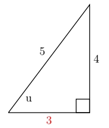
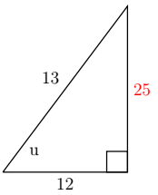
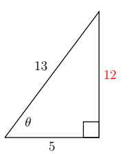
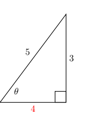

CH 6.2 – More with Identities
When it comes to using identities their true utility, however, lies not in computation, but in simplifying expressions involving the circular functions. In fact, our next batch of identities makes heavy use of the Even / Odd Identities recently discussed in Section 6.1. The next set of identities that we are going to look at allows us to express trigonometric functions using our special angles even if they aren't our special angles. For example, what if we wanted the exact value of \(\tan(75^\circ)\). Well that isn't an exact angle on our Unit Circle. Using sum and difference identities we can find the exact value of the \(\tan(75^\circ)\).
Sum and Difference Identities
\(\sin(u-v)=\sin u \cos v - \sin v \cos u\)
\(\sin(u+v)=\sin u \cos v + \sin v \cos u\)
\(\cos(u-v)=\cos u \cos v + \sin u \sin v\)
\(\cos(u+v)=\cos u \cos v - \sin u \sin v\)
\(\tan(u+v)=\dfrac{\tan u+\tan v}{1-\tan u\tan v}\)
\(\tan(u-v)=\dfrac{\tan u-\tan v}{1+\tan u\tan v}\)
We put these newfound identities to good use in the following example.
Example 1
- Find the exact value of \(\cos(15^\circ)\).
- Find the exact value of \(\sin\left(\dfrac{5\pi}{12}\right)\).
- Find the exact value of \(\sin(u-v)\) given \(\sin u = \dfrac{4}{5}\) and \(\cos v = \dfrac{12}{13}\) if \(0 < u < \frac{\pi}{2}\) and \(\frac{\pi}{2} < v < \pi\).
- Find the exact value of \(\sin\left(\dfrac{19\pi}{12}\right)\).
- If \(\alpha\) is a Quadrant II angle with \(\sin(\alpha) = \frac{5}{13}\), and \(\beta\) is a Quadrant III angle with \(\tan(\beta) = 2\), find \(\sin(\alpha - \beta)\).
- Derive a formula for \(\tan(\alpha + \beta)\) in terms of \(\tan(\alpha)\) and \(\tan(\beta)\).
Solution
1. In order to use difference identity to find \(\cos(15^\circ)\), we need to write \(15^\circ\) as a sum or difference of angles whose cosines and sines we know. One way to do so is to write \(15^\circ = 45^\circ - 30^\circ\).
\[ \begin{array}{rcl} \cos(15^\circ) & = & \cos(45^\circ - 30^\circ) \\ & = & \cos(45^\circ)\cos(30^\circ) + \sin(45^\circ)\sin(30^\circ) \\ & = & \left( \dfrac{\sqrt{2}}{2} \right)\left( \dfrac{\sqrt{3}}{2} \right) + \left( \dfrac{\sqrt{2}}{2} \right)\left( \dfrac{1}{2} \right) \\ & = & \dfrac{\sqrt{6} + \sqrt{2}}{4} \\ \end{array} \]2. In order to figure out if we need the sum or difference formula we first need to figure out what quadrant our angle would be in and which of our special angles are we going to use. Since the angle is \(\dfrac{5\pi}{12}\), we know that the denominator was created using a combination of \(\dfrac{\pi}{3}\), \(\dfrac{\pi}{4}\), \(\dfrac{\pi}{2}\), and \(\dfrac{\pi}{6}\) multiples. We need two angles that either add or subtract to give us \(\dfrac{5\pi}{12} = \dfrac{\pi}{4} + \dfrac{\pi}{6}\).
\[ \begin{array}{rcl} \sin\left(\dfrac{5\pi}{12}\right) & = & \sin\left(\dfrac{\pi}{4} + \dfrac{\pi}{6}\right) \\ & = & \sin\left(\dfrac{\pi}{4}\right)\cos\left(\dfrac{\pi}{6}\right) + \sin\left(\dfrac{\pi}{6}\right)\cos\left(\dfrac{\pi}{4}\right) \\ & = & \left( \dfrac{\sqrt{2}}{2} \right)\left( \dfrac{\sqrt{3}}{2} \right) + \left( \dfrac{\sqrt{2}}{2} \right)\left( \dfrac{1}{2} \right) \\ & = & \dfrac{\sqrt{6} + \sqrt{2}}{4} \\ \end{array} \]3. In this example it is important that we remember C.A.S.T from our Section \ref{unitcircle}. The first thing we will need to do is find our missing sides for angles \(u\) and \(v\).
Angle u:

Angle v:

Angle \(u\) is in Quadrant II where only sine is positive, thus:
\[ \begin{array}{rcl} \sin(u-v) & = & \sin u \cos v - \sin v \cos u \\ & = & \left(\dfrac{4}{5}\right)\left(\dfrac{-12}{13}\right) - \left(\dfrac{5}{13}\right)\left(\dfrac{3}{5}\right) \\ & = & \left(\dfrac{-48}{65}\right) - \left(\dfrac{15}{65}\right) \\ & = & -\dfrac{33}{65} \\ \end{array} \]This also tells us that the sum of our two angles is either in Quadrant III or Quadrant IV since sine is negative only in those two quadrants.
4. As in our previous example, we need to write the angle \(\frac{19\pi}{12}\) as a sum or difference of common angles:
\[ \begin{array}{rcl} \sin\left(\dfrac{19\pi}{12}\right) & = & \sin\left(\dfrac{4\pi}{3} + \dfrac{\pi}{4}\right) \\ & = & \sin\left(\dfrac{4\pi}{3}\right)\cos\left(\dfrac{\pi}{4}\right) + \cos\left(\dfrac{4\pi}{3}\right)\sin\left(\dfrac{\pi}{4}\right) \\ & = & \left(-\dfrac{\sqrt{3}}{2}\right)\left(\dfrac{\sqrt{2}}{2}\right) + \left(-\dfrac{1}{2}\right)\left(\dfrac{\sqrt{2}}{2}\right) \\ & = & \dfrac{-\sqrt{6} - \sqrt{2}}{4} \\ \end{array} \]5. In order to find \(\sin(\alpha - \beta)\) using our difference identity, we first determine all needed trig values.
Since \(\sin(\alpha) = \frac{5}{13}\), we get \(\cos(\alpha) = -\frac{12}{13}\) (Quadrant II).
For \(\beta\), using \(1 + \tan^2(\beta) = \sec^2(\beta)\):
\(\tan(\beta) = 2 \Rightarrow \sec(\beta) = -\sqrt{5}\), so \(\cos(\beta) = -\frac{\sqrt{5}}{5}\).
Then:
\(\sin(\beta) = \tan(\beta)\cos(\beta) = (2)\left(-\frac{\sqrt{5}}{5}\right) = -\frac{2\sqrt{5}}{5}\)
\[ \begin{array}{rcl} \sin(\alpha - \beta) & = & \sin(\alpha)\cos(\beta) - \cos(\alpha)\sin(\beta) \\ & = & \left(\dfrac{5}{13}\right)\left(-\dfrac{\sqrt{5}}{5}\right) - \left(-\dfrac{12}{13}\right)\left(-\dfrac{2\sqrt{5}}{5}\right) \\ & = & -\dfrac{29\sqrt{5}}{65} \\ \end{array} \]6. We can start expanding \(\tan(\alpha + \beta)\) using a quotient identity and our sum formulas
\[ \begin{array}{rcl} \tan(\alpha + \beta) & = & \dfrac{\sin(\alpha + \beta)}{\cos(\alpha + \beta)} \\ & = & \dfrac{\sin(\alpha)\cos(\beta) + \cos(\alpha)\sin(\beta)}{\cos(\alpha)\cos(\beta) - \sin(\alpha)\sin(\beta)} \end{array} \]Since \(\tan(\alpha) = \frac{\sin(\alpha)}{\cos(\alpha)}\) and \(\tan(\beta) = \frac{\sin(\beta)}{\cos(\beta)}\), it looks as though if we divide both numerator and denominator by \(\cos(\alpha)\cos(\beta)\) we will have what we want
\[ \begin{array}{rcl} \tan(\alpha + \beta) & = & \dfrac{\sin(\alpha)\cos(\beta) + \cos(\alpha)\sin(\beta)}{\cos(\alpha)\cos(\beta) - \sin(\alpha)\sin(\beta)} \cdot \dfrac{\dfrac{1}{\cos(\alpha)\cos(\beta)}}{\dfrac{1}{\cos(\alpha)\cos(\beta)}} \\[12pt] & & \\ & = & \dfrac{\dfrac{\sin(\alpha)\cos(\beta)}{\cos(\alpha)\cos(\beta)} + \dfrac{\cos(\alpha)\sin(\beta)}{\cos(\alpha)\cos(\beta)}}{\dfrac{\cos(\alpha)\cos(\beta)}{\cos(\alpha)\cos(\beta)} - \dfrac{\sin(\alpha)\sin(\beta)}{\cos(\alpha)\cos(\beta)}} \\[12pt] & & \\ & = & \dfrac{\dfrac{\sin(\alpha)\cancel{\cos(\beta)}}{\cos(\alpha)\cancel{\cos(\beta)}} + \dfrac{\cancel{\cos(\alpha)}\sin(\beta)}{\cancel{\cos(\alpha)}\cos(\beta)}}{\dfrac{\cancel{\cos(\alpha)}\cancel{\cos(\beta)}}{\cancel{\cos(\alpha)}\cancel{\cos(\beta)}} - \dfrac{\sin(\alpha)\sin(\beta)}{\cos(\alpha)\cos(\beta)}} \\[12pt] & & \\ & = & \dfrac{\tan(\alpha) + \tan(\beta)}{1 - \tan(\alpha)\tan(\beta)} \end{array} \]Half-Angle Identities
In a similar fashion, we may obtain a half angle formula for sine, and by using a quotient formula, obtain a half angle formula for tangent. We summarize these formulas below.
Half Angle Formulas — For all applicable angles \(\theta\)
\(\cos\left(\dfrac{\theta}{2}\right) = \pm \sqrt{\dfrac{1 + \cos\theta}{2}}\)
\(\sin\left(\dfrac{\theta}{2}\right) = \pm \sqrt{\dfrac{1 - \cos\theta}{2}}\)
\(\tan\left(\dfrac{\theta}{2}\right) = \pm \sqrt{\dfrac{1 - \cos\theta}{1+\cos\theta}}\)
Where the choice of \(\pm\) depends on the quadrant in which the terminal side of \(\frac{\theta}{2}\) lies.
Example 2
- Use a half angle formula to find the exact value of \(\cos(15^\circ)\).
- Suppose \(-\pi \leq \theta \leq 0\) with \(\cos\theta = -\frac{3}{5}\). Find \(\sin\left(\frac{\theta}{2}\right)\).
Solution
1. Since \(15^\circ\) is in QI, cosine is positive. \(\cos(15^\circ) = \cos(30^\circ/2)\).
\[ \cos(15^\circ) = \sqrt{\frac{1 + \cos 30^\circ}{2}} = \sqrt{\frac{1 + \frac{\sqrt{3}}{2}}{2}} = \sqrt{\frac{2+\sqrt{3}}{4}} = \frac{\sqrt{2+\sqrt{3}}}{2} \]2. If \(-\pi \leq \theta \leq 0\), then \(-\frac{\pi}{2} \leq \frac{\theta}{2} \leq 0\), meaning \(\sin(\frac{\theta}{2})\) is negative (Quadrant IV).
\[ \sin\left(\frac{\theta}{2}\right) = -\sqrt{\frac{1 - (-3/5)}{2}} = -\sqrt{\frac{8/5}{2}} = -\sqrt{\frac{8}{10}} = -\sqrt{\frac{4}{5}} = -\frac{2\sqrt{5}}{5} \]Double Angle Identities
Double Angle Identities — For all applicable angles \(\theta\)
\(\cos(2\theta) = \cos^2\theta - \sin^2\theta\)
\(\cos(2\theta) = 2\cos^2\theta - 1\)
\(\cos(2\theta) = 1 - 2\sin^2\theta\)
\(\sin(2\theta) = 2\sin\theta\cos\theta\)
\(\tan(2\theta) = \dfrac{2\tan\theta}{1 - \tan^2\theta}\)
The three different forms for $\cos(2\theta)$ can be explained by our ability to `exchange' squares of cosine and sine via the Pythagorean Identity $\cos^{2}(\theta) + \sin^{2}(\theta) = 1$ and we leave the details to the reader. It is interesting to note that to determine the value of $\cos(2\theta)$, only \textit{one} piece of information is required: either $\cos(\theta)$ or $\sin(\theta)$. To determine $\sin(2\theta)$, however, it appears that we must know both $\sin(\theta)$ and $\cos(\theta)$.
Example 3
Find \(\sin 2\theta\), \(\cos 2\theta\), \(\tan 2\theta\), and the quadrant that \(2\theta\) falls in.
- Given \(\cos\theta = \frac{5}{13}\) and \(\frac{3\pi}{2} < \theta < 2\pi\).
- Given \(\sin\theta = -\frac{3}{5}\) and \(\pi < \theta < \frac{3\pi}{2}\).
Solution
-
Looking at our first example we have two sides of our triangle which means we need our third side.

Find missing side
\[ \begin{array}{rcl} a^2 + b^2 & = & c^2 \\ 5^2 + b^2 & = & 13^2 \\ 25 + b^2 & = & 169 \\ b^2 & = & 144 \\ b & = & 12 \\ \end{array} \]Thus to find our different double angle values:
sin 2θ
\[ \begin{array}{rcl} \sin 2\theta & = & 2\sin\theta\cos\theta \\[2pt] & = & 2\left(-\dfrac{12}{13}\right)\left(\dfrac{5}{13}\right) \\[10pt] & = & -\dfrac{120}{169} \end{array} \]cos 2θ
\[ \begin{array}{rcl} \cos 2\theta & = & \cos^2\theta - \sin^2\theta \\[2pt] & = & \left(\dfrac{5}{13}\right)^2 - \left(\dfrac{12}{13}\right)^2 \\[10pt] & = & \dfrac{25}{169} - \dfrac{144}{169} \\[10pt] & = & -\dfrac{119}{169} \end{array} \]tan 2θ
\[ \begin{array}{rcl} \tan 2\theta & = & \dfrac{2\tan\theta}{1 - \tan^2\theta} \\[10pt] & = & \dfrac{2\left(-\dfrac{12}{5}\right)}{1 - \left(\dfrac{12}{5}\right)^2} \\[10pt] & = & \dfrac{-\dfrac{24}{5}}{-\dfrac{119}{25}} \\[10pt] & = & \dfrac{120}{119} \end{array} \]Since cosine and sine are negative while tangent is positive, that means that \(2\theta\) is in Quadrant IV.
-
We take the same approach with this one. It is still important to remember C.A.S.T, and you can evaluate \(\tan 2\theta\) in terms of sine and cosine.

Find missing side
\[ \begin{array}{rcl} a^2 + b^2 & = & c^2 \\ 3^2 + b^2 & = & 5^2 \\ 9 + b^2 & = & 25 \\ b^2 & = & 16 \\ b & = & 4 \\ \end{array} \]Thus to find our different double angle values:
sin 2θ
\[ \begin{array}{rcl} \sin 2\theta & = & 2\sin\theta\cos\theta \\[2pt] & = & 2\left(-\dfrac{3}{5}\right)\left(-\dfrac{4}{5}\right) \\[10pt] & = & -\dfrac{24}{25} \end{array} \]cos 2θ
\[ \begin{array}{rcl} \cos 2\theta & = & \cos^2\theta - \sin^2\theta \\[2pt] & = & \left(-\dfrac{4}{5}\right)^2 - \left(-\dfrac{3}{5}\right)^2 \\[10pt] & = & \dfrac{16}{25} - \dfrac{9}{25} \\[10pt] & = & -\dfrac{7}{25} \end{array} \]tan 2θ
\[ \begin{array}{rcl} \tan 2\theta & = & \dfrac{\sin 2\theta}{\cos 2\theta} \\[10pt] & = & \dfrac{\dfrac{24}{25}}{\dfrac{7}{25}} \\[10pt] & = & \dfrac{24}{7} \end{array} \]Since cosine, sine, and tangent are all positive, that means that \(2\theta\) is in Quadrant I.
Product-to-Sum & Sum-to-Product Identities
Our next batch of identities, the Product to Sum Formulas, are easily verified by expanding each of the right hand sides and as you should expect by now we leave the details as exercises. They are of particular use in Calculus, and we list them here for reference.
Product to Sum Formulas
\(\cos\alpha\cos\beta = \frac{1}{2} [\cos(\alpha - \beta) + \cos(\alpha + \beta)]\)
\(\sin\alpha\sin\beta = \frac{1}{2} [\cos(\alpha - \beta) - \cos(\alpha + \beta)]\)
\(\sin\alpha\cos\beta = \frac{1}{2} [\sin(\alpha - \beta) + \sin(\alpha + \beta)]\)
Sum to Product Formulas
\(\cos\alpha + \cos\beta = 2 \cos\left( \frac{\alpha + \beta}{2}\right)\cos\left( \frac{\alpha - \beta}{2}\right)\)
\(\cos\alpha - \cos\beta = - 2 \sin\left( \frac{\alpha + \beta}{2}\right)\sin\left( \frac{\alpha - \beta}{2}\right)\)
\(\sin\alpha \pm \sin\beta = 2 \sin\left( \frac{\alpha \pm \beta}{2}\right)\cos\left( \frac{\alpha \mp \beta}{2}\right)\)
Example 4
- Write \(\cos(2\theta)\cos(6\theta)\) as a sum.
- Write \(\sin(\theta) - \sin(3\theta)\) as a product.
Solution
1. Using \(\alpha = 2\theta\) and \(\beta = 6\theta\):
\[ \frac{1}{2} [\cos(2\theta - 6\theta) + \cos(2\theta + 6\theta)] = \frac{1}{2} \cos(-4\theta) + \frac{1}{2}\cos(8\theta) = \frac{1}{2} \cos(4\theta) + \frac{1}{2} \cos(8\theta) \]2. Using \(\alpha = \theta\) and \(\beta = 3\theta\):
\[ 2 \sin\left( \frac{\theta - 3\theta}{2}\right)\cos\left( \frac{\theta + 3\theta}{2}\right) = 2 \sin(-\theta)\cos(2\theta) = -2\sin\theta\cos 2\theta \]The reader is reminded that all of the identities presented in this section which regard the circular functions as functions of angles (in radian measure) apply equally well to the circular (trigonometric) functions regarded as functions of real numbers.
Exercises
In Exercises 1–15, use Sum and Difference Identities to find the exact value.
- \(\cos(75^\circ)\)
- \(\sec(165^\circ)\)
- \(\sin(105^\circ)\)
- \(\csc(195^\circ)\)
- \(\cot(255^\circ)\)
- \(\tan(375^\circ)\)
- \(\cos\left(\frac{13\pi}{12}\right)\)
- \(\sin\left(\frac{11\pi}{12}\right)\)
- \(\tan\left(\frac{13\pi}{12}\right)\)
- \(\cos\left(\frac{7\pi}{12}\right)\)
- \(\tan\left(\frac{17\pi}{12}\right)\)
- \(\sin\left(\frac{\pi}{12}\right)\)
- \(\cot\left(\frac{11\pi}{12}\right)\)
- \(\csc\left(\frac{5\pi}{12}\right)\)
- \(\sec\left(-\frac{\pi}{12}\right)\)
In Exercises 16–19, find derived values based on given quadrants and trig ratios.
- If \(\cos\alpha = \sqrt{5}/5\) (QIV) and \(\sin\beta = \sqrt{10}/10\) (QII), find \(\cos(\alpha+\beta)\), \(\sin(\alpha+\beta)\), and \(\tan(\alpha+\beta)\).
- If \(\csc\alpha = 3\) (QI) and \(\tan\beta = -7\) (QII), find \(\cos(\alpha+\beta)\) and \(\sin(\alpha+\beta)\).
In Exercises 20–31, verify the identities.
- \(\cos(\theta - \pi) = -\cos\theta\)
- \(\sin(\pi - \theta) = \sin\theta\)
- \(\tan(\theta + \pi/2) = -\cot\theta\)
- \(\sin(\alpha + \beta) + \sin(\alpha - \beta) = 2\sin\alpha\cos\beta\)
In Exercises 32–41, use the Half-Angle Formulas to find the exact value.
- \(\cos(75^\circ)\)
- \(\sin(105^\circ)\)
- \(\cos(67.5^\circ)\)
- \(\sin(157.5^\circ)\)
- \(\tan(112.5^\circ)\)
- \(\cos\left(\frac{7\pi}{12}\right)\)
- \(\sin\left(\frac{\pi}{12}\right)\)
- \(\cos(\pi/8)\)
- \(\sin(5\pi/8)\)
- \(\tan(7\pi/8)\)